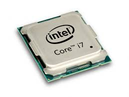
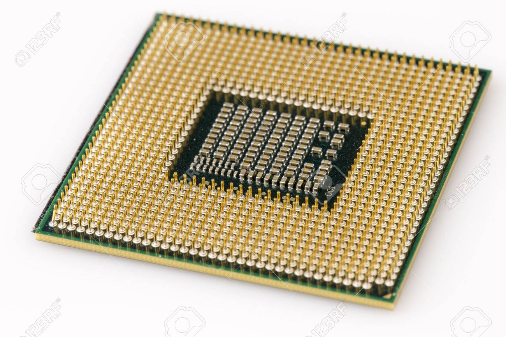

CPU |
||
|---|---|---|
| Immagini del componente | ||
|  |  | |
| Informazioni sul componente | ||
|
La CPU (Central Processing Unit) e' l'unita' di elaborazione centrale del sistema. Controlla tutte le funzioni della macchina ed esegue tutte le funzioni di calcolo. E' composta da:
|
||
| Evoluzione | ||